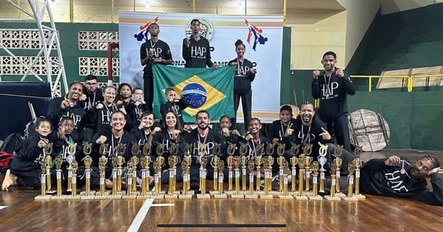
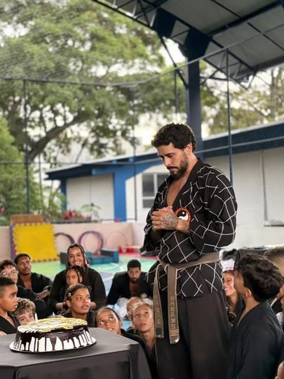

Hapkido
Defesa pessoal, chutes, quedas, torções e projeções. Desenvolve coordenação, flexibilidade, foco e autoconfiança. Tem turmas para todas as idades.
합기도 Federação · Salvador · desde 2014
Hapkido e Senshi Kickboxing para crianças, jovens e adultos. Uma família que treina junto há 12 anos, com projeto social e inclusão com respeito para TDAH e TEA.
A academia
Hapkido 합기도 junta três ideias: hap, harmonia; ki, energia; e do, caminho. É uma arte marcial coreana de chutes, torções, projeções e defesa pessoal. Ela ensina a usar a força do outro a seu favor e, antes de tudo, ensina a ter respeito.
A Hapkido Botto nasceu em abril de 2014 na Federação, em Salvador. Foi fundada pelo Sabeomnim Ricardo Botto. Em 12 anos, a escola virou uma família. Tem criança dando o primeiro rolamento, adolescente disputando o Campeonato Brasileiro e aluno de 60 e poucos anos amarrando a faixa com orgulho.

Defesa pessoal, chutes, quedas, torções e projeções. Desenvolve coordenação, flexibilidade, foco e autoconfiança. Tem turmas para todas as idades.
Condicionamento, golpes de braço e perna, esquiva e combate, tudo com técnica e disciplina de arte marcial. É treino forte, que queima e dá resultado.
Horários
Carregando horários…
A primeira aula é experimental. Chame no WhatsApp para reservar o seu lugar na turma certa.
Graduação
Todo mundo começa de faixa branca. A cada exame, o aluno prova técnica, disciplina e evolução, e a cor muda.
Galeria de honra
Anos de tatame, suor e exame. Estes são os faixas pretas formados pela academia.
Carregando…
Mural de graduados
Da cinza à vermelha, aqui estão os alunos na graduação atual. Toque numa cor para filtrar.

O mestre
"Movimentando corpos e transformando vidas."
O mestre Botto fundou a academia em 2014 e comanda o tatame desde então. Em 2026 recebeu o prêmio de Melhor Técnico de Hapkido no Melhores do Esporte, ao lado dos atletas premiados da equipe. Ele leva o Hapkido para escolas, condomínios e projetos sociais, porque acredita que a arte marcial muda vidas.
@ric.botto no InstagramTrajetória
Em abril, na Federação, em Salvador.
Aulas gratuitas começam oficialmente na Escola Municipal Cidade de Jequié. Hoje são 70 a 80 alunos sem pagar nada, e mais de 300 pessoas já passaram pelo projeto, entre idosos, autistas e pessoas com deficiência.
Prêmio de Melhor Técnico de Hapkido e atletas da equipe premiados na cerimônia da Federação de Hapkido da Bahia com a Sudesb.
22 atletas da academia no Brasileiro de Hapkido, em Contagem (MG), viagem bancada com rifa e doações da comunidade.
Galeria
Aula experimental
Mande seu nome, a idade de quem vai treinar e a modalidade. A gente responde com o melhor horário.
Escola Municipal Cidade de Jequié e Colégio Municipal Mário Costa Neto (projeto social) · Colégio Assunção · Colégio Montessoriano · Colégio Carpe Diem · Escola Didática da Bahia · condomínios